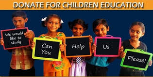
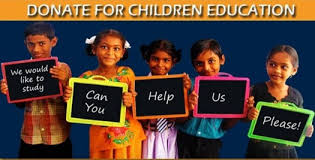

What We Do
We plan and support amazing projects that help change the lives of children, youth and orphans across different regions of the world. We focus on creating opportunities that bring lasting impact to vulnerable communities. From providing food, shelter, and education to supporting healthcare and employment programs, our initiatives are designed to empower individuals and families.
We Fund
We believe that change begins with support. Through generous donations and transparent fundraising, we provide financial assistance to those in need.
Our funding programs reach families struggling with poverty, medical emergencies, and natural disasters. We make sure every rupee is utilized wisely by conducting community assessments and working directly with local organizations. With the help of our donors, we bring hope and essential resources to people who need them the most.
We Educate
Education is the most powerful tool to break the cycle of poverty. We offer resources, scholarships, and mentorship programs for children and youth.
 

Through our education initiatives, we support schools with learning materials, provide digital literacy training, and create safe spaces for children to grow. We also run after-school programs, skill development workshops, and career counseling sessions to guide young people toward brighter futures. By empowering students with knowledge and life skills, we help them build confidence, dream bigger, and uplift entire communities.
We Provide Care
We extend support to the elderly, orphans, and those in crisis through health camps, counseling services, and daily essentials.


Our care programs ensure that no one feels left behind. We distribute food, clothing, and medicines to vulnerable families and set up medical check-up camps in remote areas. For orphans and the elderly, we provide safe shelter, emotional support, and a loving environment. We also organize awareness drives on health, hygiene, and mental well-being.
We Employe
Empowering individuals through jobs and vocational training. We help people become self-reliant and live with dignity.


Our employment programs focus on teaching practical skills such as tailoring, computer training, handicrafts, and small-scale entrepreneurship. We connect trained individuals with job opportunities and also support them in starting their own businesses. By creating sustainable livelihoods, we help people achieve independence and contribute positively to society.
Services
Health and Medical Support
Education
Food and Shelter
Employement
Emergency and Disaster relief
provide services that address basic needs, education, health, livelihood, rights, and environmental sustainability. They function on principles of humanitarianism, social justice, capacity building, and sustainable development, filling gaps left by governments and ensuring vulnerable communities are not left behind.